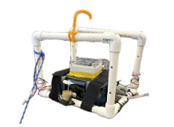
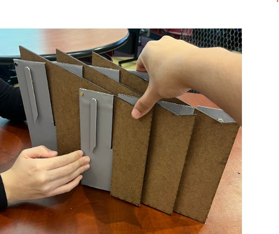
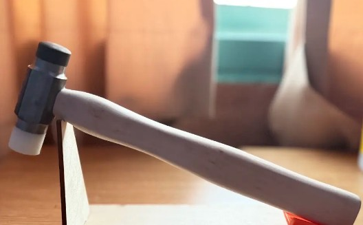

Projects
Engineering Projects
Autonomous Underwater Vehicle (AUV)
Depth, Temperature & RGB Measurement System
Harvey Mudd College — Experimental Engineering | Spring 2026 | Team of 4

Project Overview
As part of Harvey Mudd College’s Experimental Engineering course, my team designed, built, and deployed an autonomous underwater vehicle (AUV) to investigate how visible light changes with depth in coastal waters.
The system measured:
- Spectral light intensity using an RGB sensor
- Water pressure for depth estimation
- Water temperature
- Depth-resolved sensor data during autonomous dives
The vehicle was deployed off Dana Point, California, where we collected measurements to approximately 3 m depth.
System Design
The AUV used a PVC structural frame containing its propulsion system, electronics enclosure, sensors, and data-acquisition hardware.
The sensing system included:
- TCS34725 RGB sensor for visible-light measurements
- MPX5700 pressure sensor for depth estimation
- NTC thermistor for temperature measurement
- Teensy 4.1 microcontroller
- microSD storage for synchronized experimental data
The vehicle used motor-driven vertical motion and proportional feedback control to autonomously reach commanded depths.
My Contributions
My work on the project included:
- Designing and assembling portions of the AUV mechanical structure and motor system
- Designing and soldering sensor and data-acquisition circuitry
- Integrating pressure, temperature, and RGB sensors with a Teensy 4.1
- Developing pressure-sensor signal-conditioning circuitry
- Calibrating sensor voltage to water depth
- Implementing and testing proportional depth control
- Debugging electrical noise and sensor interference during motor operation
- Supporting field deployment and experimental data collection
- Processing experimental data in MATLAB
Pressure Measurement & Signal Conditioning
The MPX5700 pressure sensor required signal conditioning before its output could be measured effectively by the Teensy’s ADC.
I designed a two-stage MCP6002 op-amp circuit with a gain of approximately 6.87 to scale and offset the pressure-sensor output into the Teensy’s usable 0.3–3.3 V ADC range.
This prevented signal clipping while improving measurement resolution.
The pressure sensor was then calibrated in water using a linear voltage-to-depth relationship.
Autonomous Depth Control
The AUV used proportional feedback control to reach commanded depths.
Pressure measurements were converted to estimated depth, and the resulting error was used to command the vertical motors.
During testing, we observed electrical interference in sensor measurements while the motors were operating. To isolate the source, we performed dedicated motor-off testing and modified the measurement sequence so that sensor readings were collected during motors-off holds.
This improved measurement reliability during depth-controlled operation.
Data Analysis
Experimental data were processed in MATLAB.
The analysis included:
- Sensor calibration
- Depth reconstruction from pressure measurements
- Per-channel RGB calibration
- Surface-reference normalization
- Beer–Lambert-based transmission analysis
- Comparison of red, green, and blue attenuation with depth
During field testing, measurements showed more than 80% loss of surface light by approximately 3 m depth, with the red channel attenuating most rapidly.
Final Report
The complete experimental design, analysis, results, and discussion are available in the project report.
Mobile Lectern
Client Design Project
Harvey Mudd College — Introduction to Engineering Design & Manufacturing | Fall 2025 | Team of 4

Final assembled portable lectern.

Lectern in its collapsed configuration.
Project Overview
My team designed and fabricated a lightweight, portable lectern for a Harvey Mudd faculty client.
The primary design requirements included:
- Rapid assembly and disassembly
- Easy transportation and storage
- Sufficient strength for classroom use
- Low manufacturing cost
- Simple and repeatable operation
The resulting design, called Accordion Stretch, used a collapsible five-panel structure with removable wings and grip surfaces.
Design Process
Our design process included:
- Translating client needs into measurable engineering requirements
- Generating and evaluating multiple concepts
- Creating CAD models in SolidWorks
- Building and testing physical prototypes
- Iterating based on usability and structural testing
- Developing manufacturing documentation for the final design
Final Design
The final prototype achieved:
- Approximately 1.6-second setup time
- Support for loads greater than 12 lb
- Compact collapsible geometry
- Five-panel construction
- Removable support wings
- Approximately $24 in prototype material cost
The final deliverables included a SolidWorks drawing package, bill of materials, and manufacturing process router.
Engineering Drawings
Machinist’s Hammer
Manufacturing Project
Harvey Mudd College | Fall 2025

Project Overview
I manufactured a machinist’s hammer from raw steel and nylon stock using manual machining processes.
The project emphasized precision manufacturing, interpretation of engineering drawings, proper machine setup, and process planning.
Manufacturing Experience
I used:
- Manual mill
- Manual lathe
- Bandsaw
- Drilling
- Tapping
- Heat treatment
- Tempering
- Precision measurement tools
I calibrated and operated manual mills and lathes to manufacture components to thousandths-of-an-inch dimensional specifications, following engineering drawings and a defined process router.
The project strengthened my experience with manual machining, tolerances, fabrication, and manufacturing processes.